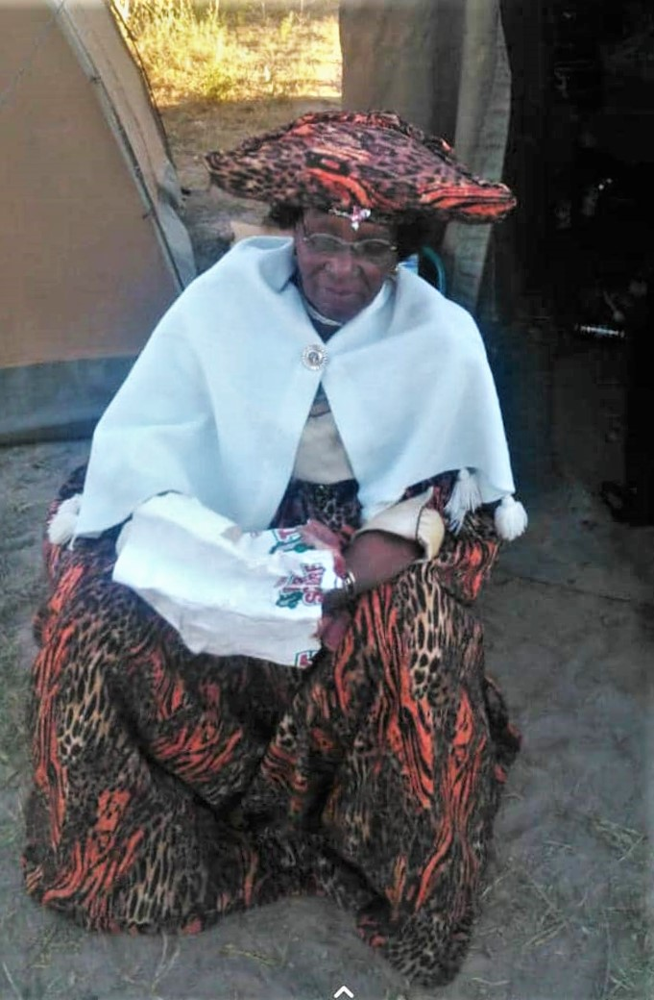
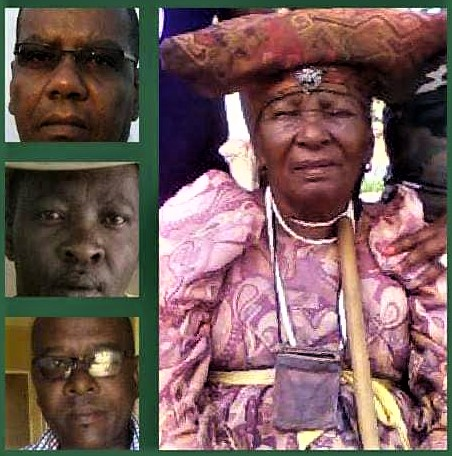
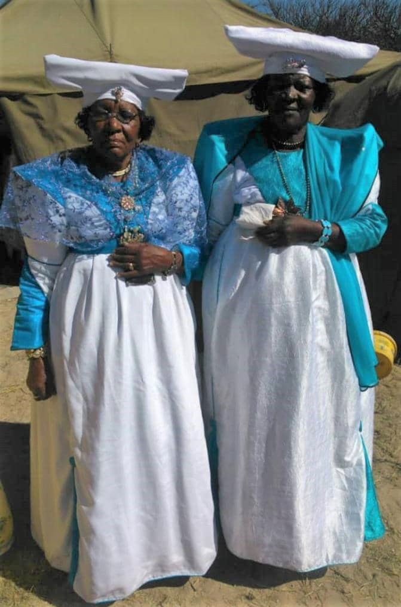

Ondjozikiro ku mama tjiveri
-

- Kamaakoho...
- omukazendu wa kovanatje va Tjeruka tjamawano..
- Omwatje wa mukaa Tjiponda.
- Wa ihe Hiamakutu Mujazu
- Ovanatje va Hiangapuee wongombe ya munjanga ndji tungwa nangamwa muti mbu yavaza motjirongo.
- Ondekurona ya Kahitira...
- Ovanatje va Kahitira wonḓera ya Kaeru. Ovanatje va Tjipatasane tjanahange, tate ngwa patasana ozombi no zondjou.
- Wa ihe ngwa ka kokera kouye ozongombe kuza yahwa no zondana..
- Wa ina Clemendine Kaujama
- Ovanatje va Hiateta mbe zemana omuti omuwa mbwa tjaurira otjizumba...
- Ovanatje va Hiamberera, ovanatje vozongombe zarumbi, ovanatje va Tjandiha ko matundu wounene.
- Wa kwatwera mOtjinene...
- Itji tji tja hungirwa i Kaumbangere wa Tjombe.
- Kongombe ya Mutunda ombonde otjikoroona ndjakata omayuva yakoro. Komuramba wa Karukuru kanauho.

- Nu matja ku ina omukwate kaku mai
- Ina nguri kozongombe za Tuariua zomaihi wovapahe. Kongombe ya Hiaketjo onduwombe otjo hara... Metundu rovanatje va Uamburu.
- Eye matja tja sekama poyao, po ndjiwo ya Kakuiina, mai kongoro ya Kamusuvise otjirumbu tjeinya. Mondjiwo ya inaa Katuezemuna woruṋa rwa Kamburatene oruwa ndwa hovekwa mombongora...
- Mai ku ina omunene, Pauline Inaaurumbu wa Kaongua wa Kahitira, meke mutekera omeva.
- Nu arikana tjiwa kahakaena... 
- nova kwatjivi avehe, noomama Inaaurumbu, Inaautanga na mama Uatanauka, ve minikirira.
- Itja twe vesuvera...😭😭😭